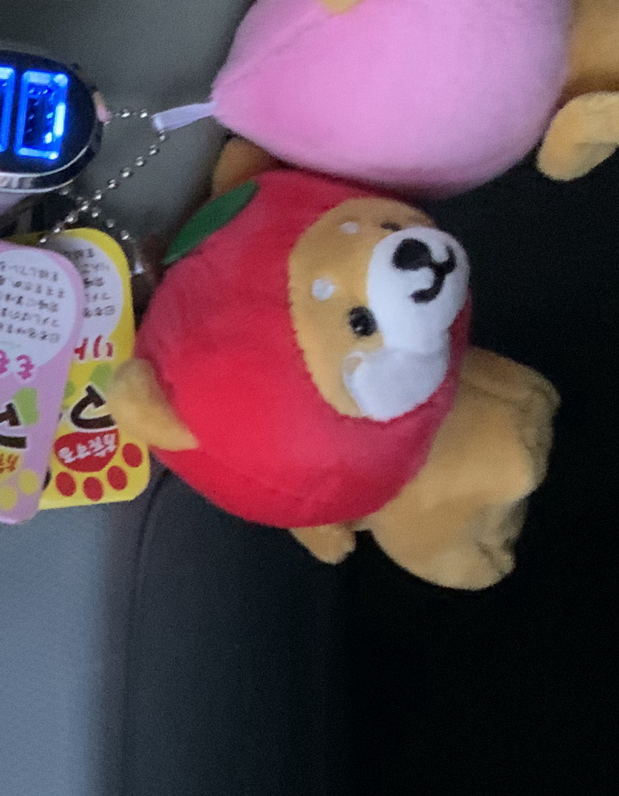
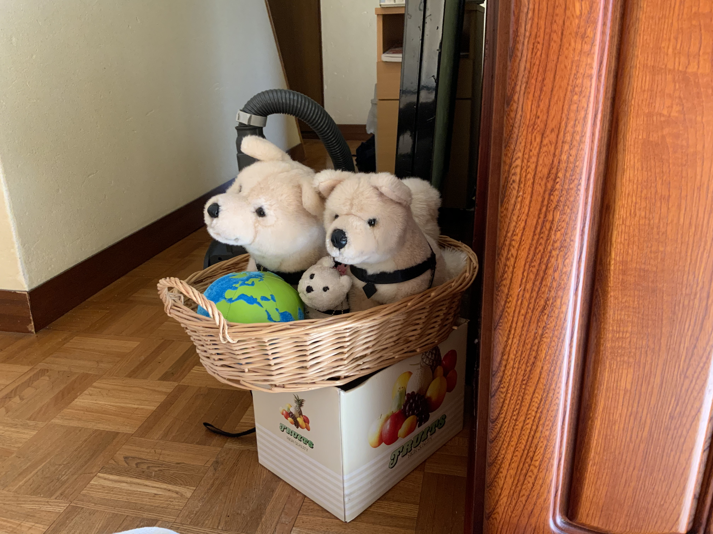
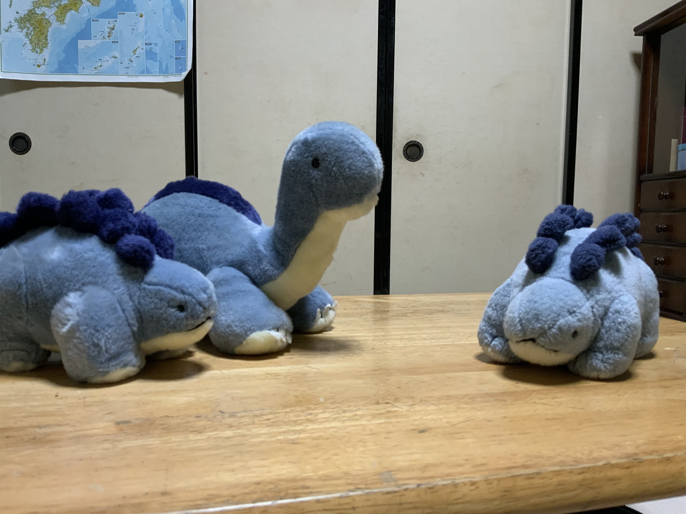
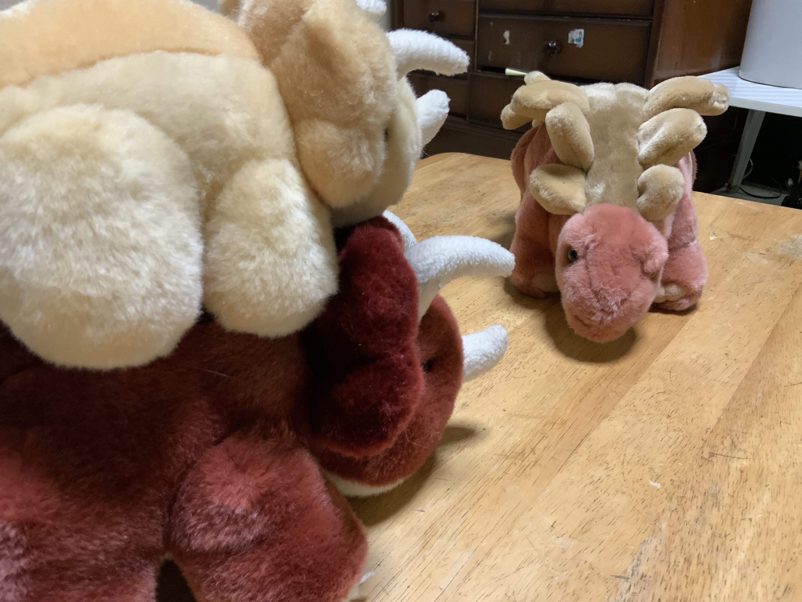
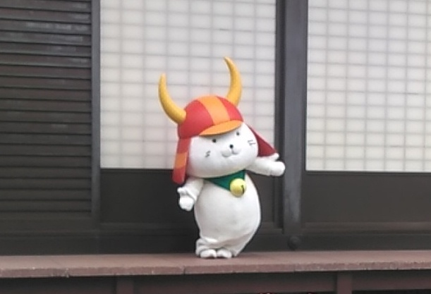

Oh... I don't have enough time to write more!
I'll not write any commeents. I'll show you many pictures.
-
I like stuffed animals.
   

-
I like yurukyara.

-
I like music because I was in a brass band club when I was a junior high school student.
I like "together forever" sung by Rick Astley because I have heard the song as a CASIO song!
"CASIO MA-120" was in my house about 5 years ago, so I heard the song as one of its demo songs
picture's URL : https://www.amazon.co.jp/CASIO-MA-120-TONE-49ミニ鍵盤キーボード-カシオ/dp/B01NAQ0MZ1
... I'm tired!
See you!